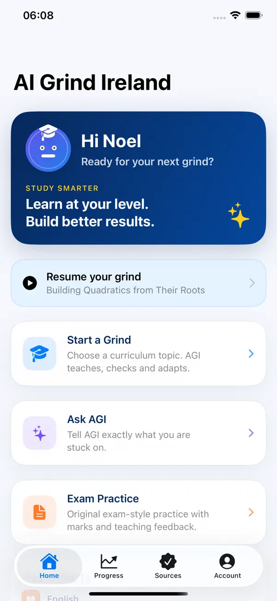

Junior Cycle study
AI grinds built around your Junior Cycle setup.
Choose your year, programme and subjects, then study curriculum topics with Learn, Practice, Ask AGI and exam-style modes.

Inside AI Grind Ireland
One clear place to start
Students can jump into a Grind, Ask AGI, Exam Practice or resume recent work without having to invent prompts from scratch.
Study at the right level
AGI’s setup separates 1st, 2nd and 3rd Year students and supports Junior Cycle, JCSP, Level 1 Learning Programme and Level 2 Learning Programme pathways. Where a subject supports levels, the student can select the appropriate course level.
Pick a real curriculum topic
Instead of opening a blank chatbot and deciding what to type, students can start from their selected subject and curriculum topic. That keeps the grind anchored to what they are actually studying.
Learn
Break down a topic into understandable teaching steps.
Practice
Focus on areas where previous answers show more work is needed.
Track progress
Keep topic mastery and revision timing together in one place.
Useful for regular study, not just exam week
AGI is designed to be used throughout the year. A student can revisit a topic, practise it again and see progress develop rather than treating every session as a one-off conversation.